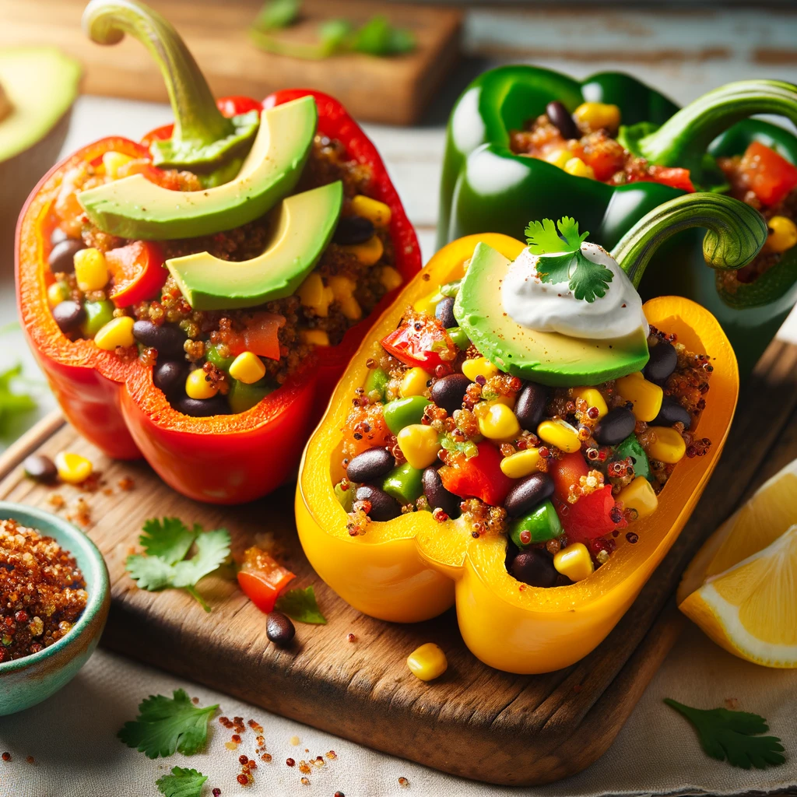

Quinoa Stuffed Bell Peppers with a Southwest Twist

Colorful Culinary Delight: Quinoa Stuffed Bell Peppers with a Southwest Twist
Quinoa Stuffed Bell Peppers with a Southwest Twist is a visually stunning and palate-pleasing dish that embodies the essence of vibrant, healthful eating. This culinary creation starts with brightly colored bell peppers—red, yellow, and green—hollowed out and filled to the brim with a hearty and flavorful mixture. The stuffing, a savory blend of fluffy quinoa, black beans, sweet corn, and diced tomatoes, is seasoned with a rich tapestry of Southwest spices that infuse the dish with warmth and depth. Chopped fresh cilantro adds a burst of freshness, while the incorporation of avocado slices and a dollop of vegan sour cream on top introduces a creamy contrast that beautifully complements the textures and flavors within.
Not only is this dish a feast for the eyes with its array of colors and textures, but it also offers a nutritional powerhouse, packed with protein from the quinoa and black beans, vitamins and antioxidants from the fresh vegetables, and healthy fats from the avocado. It's a testament to how plant-based ingredients can come together in a harmonious blend that's both satisfying and nourishing. Ideal for a cozy family dinner or as a standout dish at a gathering, these Quinoa Stuffed Bell Peppers with a Southwest Twist promise a delightful eating experience that's as enjoyable to look at as it is to eat.
Ingredients:
- 4 large bell peppers (assorted colors for variety)
- 1 cup quinoa
- 2 cups vegetable broth (for cooking quinoa)
- 1 can (15 oz) black beans, rinsed and drained
- 1 cup corn kernels (fresh, frozen and thawed, or canned)
- 1 cup diced tomatoes (fresh or canned and drained)
- 1 small red onion, finely chopped
- 2 cloves garlic, minced
- 1 jalapeño, seeded and finely chopped (optional for extra heat)
- 1/2 cup chopped fresh cilantro
- 1 tsp ground cumin
- 1 tsp chili powder
- Salt and pepper to taste
- 1 avocado, sliced for garnish
- Vegan sour cream, for serving
- Olive oil, for sautéing
Instructions
Prepare the Quinoa:
- Rinse quinoa under cold water in a fine mesh strainer.
- In a medium saucepan, bring 2 cups of vegetable broth to a boil. Add the quinoa, reduce heat to low, cover, and simmer for 15-20 minutes, or until all the liquid is absorbed. Remove from heat and let it sit, covered, for 5 minutes. Fluff with a fork.
Prepare the Bell Peppers:
- Preheat your oven to 375°F (190°C).
- Cut the tops off the bell peppers and remove the seeds and membranes. Place the peppers in a baking dish, cut-side up. Lightly brush the outsides of the peppers with olive oil.
Make the Filling:
- Heat a large skillet over medium heat. Add a splash of olive oil, then sauté the onion, garlic, and jalapeño (if using) until soft, about 5 minutes.
- Stir in the cooked quinoa, black beans, corn, diced tomatoes, cumin, chili powder, salt, and pepper. Cook for another 5 minutes, stirring occasionally.
- Remove from heat and stir in the chopped cilantro.
Stuff the Peppers:
- Spoon the quinoa mixture into each bell pepper cavity, pressing down as needed to fill completely.
Bake:
- Cover the baking dish with foil and bake for about 30 minutes. Uncover and bake for an additional 10 minutes, or until the peppers are tender and the filling is heated through.
Serve:
- Allow the peppers to cool slightly before serving. Garnish with avocado slices and a dollop of vegan sour cream. Enjoy your vibrant and flavorful Quinoa Stuffed Bell Peppers with a Southwest Twist!